c++虚表指针及虚表是实现多态的关键，因此有必要了解下实现方法。
(本文运行环境为VS2017 编译器MSVC，为了省略一点篇幅，我删去了一部分代码。如果有代码有链接错误只是因为没有具体定义虚函数，看官自己加上简单定义即可)
在Visual Studio里，可以利用reportAllClassLayout查看内存。具体实现如下：
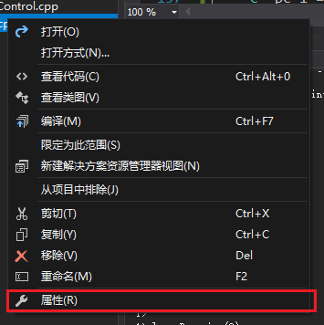
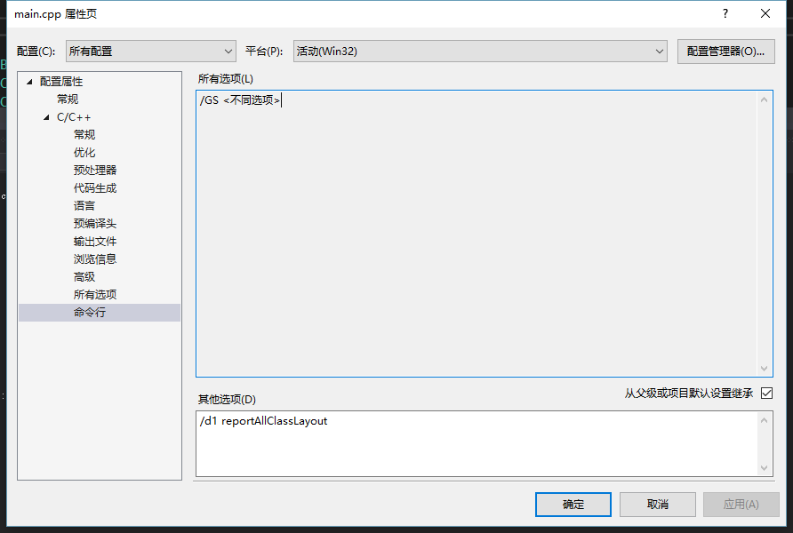
普通类:
接下来就可以愉快的敲代码了，首先定义一个类：
|
|
然后编译，可以看到有如下的排布：

因为这里要去除内存对齐的因素，所以我都用了int型，从这里可以看到普通类的排布方式，成员变量依据声明的顺序进行排列（类内偏移为0开始），成员函数不占内存空间。
继承类:
然后定义一个继承类
|
|
然后编译下：

可以看到子类继承了父类的成员变量，在内存排布上，先是排布了父类的成员变量，接着排布子类的成员变量，同样，成员函数不占字节。
虚函数(无覆盖 一般继承):
|
|
这里我加上了一个虚函数，先看下基类内存分布：
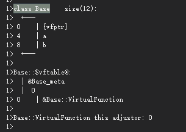
这个内存结构图分成了两个部分，上面是内存分布，下面是虚表，我们逐个看。MSVC是把虚表指针放在了内存的开始处（0地址偏移），然后再是成员变量；下面生成了虚表，紧跟在&Base_meta后面的0表示，这张虚表对应的虚指针在内存中的分布，下面列出了虚函数，左侧的0是这个虚函数的序号，这里只有一个虚函数，所以只有一项，如果有多个虚函数，会有序号为1，为2的虚函数列出来。注意这里的只是虚表里面增加，虚函数指针只有一个。
然后我给子类加上了个额外的虚函数，但是没有覆盖父类的。再来看子类内存排布：
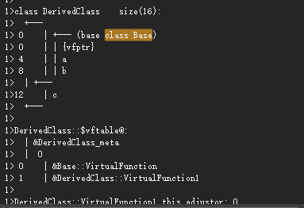
上半部是内存分布，可以看到，虚表指针被继承了，且仍位于内存排布的起始处，下面是父类的成员变量a和b，最后是子类的成员变量c，注意虚表指针只有一个，子类并没有再生成虚表指针了。从以上内存分布，可以看出：
- 虚函数按照其声明顺序放于表中。
- 父类的虚函数在子类的虚函数前面。
虚函数(覆盖 一般继承):
如果不覆盖，那么我们多态就无从谈起，于是这里我修改了下子类代码
|
|
重新编译程序，可以看到以下内存分布:

可以发现，Base::VirtualFunction在虚表中不见了，那么总结出：
- 覆盖的f()函数被放到了虚表中原来父类虚函数的位置。
- 没有被覆盖的函数依旧。
多态!
那么编译器是如何利用虚表指针与虚表来实现多态的呢？是这样的，当创建一个含有虚函数的父类的对象时，编译器在对象构造时将虚表指针指向父类的虚函数；同样，当创建子类的对象时，编译器在构造函数里将虚表指针（子类只有一个虚表指针，它来自父类）指向子类的虚表（这个虚表里面的虚函数入口地址是子类的）。
所以，对于这样一段代码Base *p = new Derived():
生成的是子类的对象，在构造时，子类对象的虚指针指向的是子类的虚表，接着由Derived*到Base*的转换并没有改变虚表指针，所以这时候p->VirtualFunction， 由p所指的内存中的虚函数表的VirtualFunction()的位置已经被Derive::VirtualFunction()函数地址所取代，于是在实际调用发生时，是Derive::VirtualFunction()被调用了。这就实现了多态。
多重继承(无覆盖)
|
|
内存分布图(前三个省略)：
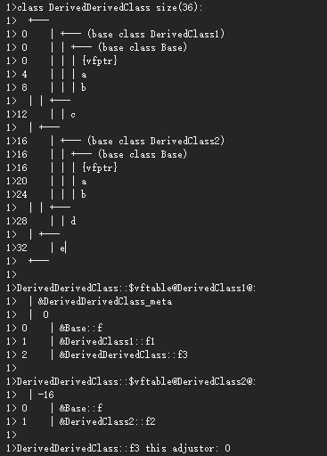
下面我们重点看看这个类DerivedDerivedClass，由外向内看，它并列地排布着继承而来的两个父类DerivedClass1与DerivedClass2，还有自身的成员变量e。DerivedClass1包含了它的成员变量c，以及Base，Base有一个0地址偏移的虚表指针，然后是成员变量a和b；DerivedClass2的内存排布类似于DerivedClass1，偏移量为16(即，注意到DerivedClass2里面竟然也有一份Base。
可以看到:
- 每个父类都有自己的虚表
- 存了2个虚表指针，来指向不同的父类虚表
- 子类的虚函数被放到了第一个父类的表中。（所谓的第一个父类是按照声明顺序来判断的）
这样做就是为了解决不同的父类类型的指针指向同一个子类实例，而能够调用到实际的函数。
多重继承(有覆盖)
|
|
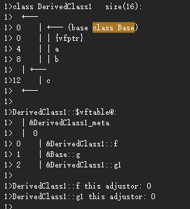
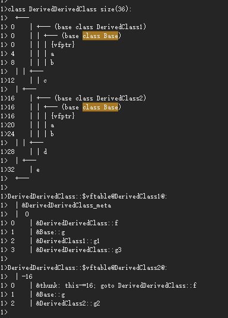
我们可以看见，两个父类虚函数表中的f()的位置被替换成了子类的函数指针。这样，我们就可以任一静态类型的父类来指向子类，并调用子类的f()了。
|
|
虚继承
不知道看官注意到了没，在上文中，我没有写Base b = &d; b->f();
这样的代码为什么出问题，如果是从上文阅读过来，我想这个问题一定难不倒你:)
关键是怎么解决呢？那么可以利用虚继承的概念。
在虚继承下，对给定虚基类，无论该类在派生层次中作为虚基类出现多少次，只继承一个共享的基类子对象。共享的基类子对象称为虚基类。 《c++ primer》
先上代码(懒得一行一行删定义了···)：
|
|
编译上述代码：
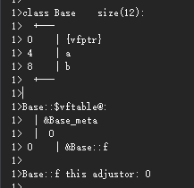
Base没有变化。但是只要我们往下，就会发现很多不同的东西：
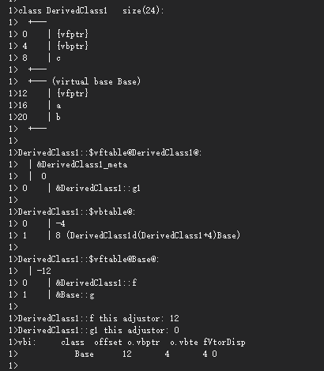
DerivedClass1就已经有变化了，原来是先排虚表指针与Base成员变量，vfptr位于0地址偏移处；但现在有三个虚表指针了，一个是vbptr，还有2个是vfptr。vbptr是这个DerivedClass1对应的虚表指针，它指向DerivedClass1的虚表vbtable，2个vfptr分别是自己的虚指针与虚基类表对应的虚指针，它指向自己的vftable与虚基类的vftable
然后是三张虚表，第一张表是第一个vfptr指向的表，里面含有D1类的额外虚函数g1()。然后是vbptr指向的表，8表示{vbptr}与第二个{vfptr}(也就是虚基类的vfptr)的偏移；第三张表是第二个vfptr指向的表，-12指明了这张表所对应的虚指针位于内存的偏移量。
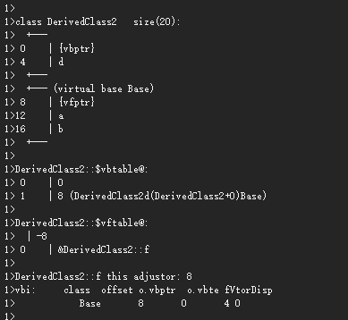
DerivedClass2与上图相似，同样会有三个虚指针，分别指向三张虚表。
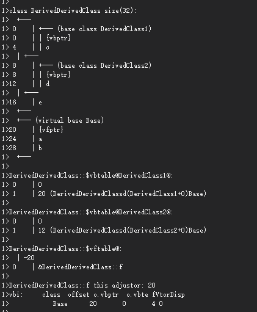
我们来仔细看一下DerivedDerivedClass的内存分布，这里面有五个虚指针了，但base却只有一份。
第一张虚表是DD继承了D1的，然后把DD::g3()加到了最后。第二张虚表是DD继承了D2的。
第三虚表是内含DerivedClass1的，24表示它的虚指针{vbptr}离虚基表指针{vfptr}的距离，第四张虚表是内含DerivedClass2的，12表示它的虚指针{vbptr}离虚基表指针{vfptr}的距离，最后一张表是虚基表，-28指明了它对应的虚指针{vfptr}在内存中的偏移。
虚继承的作用是减少了对基类的重复，代价是增加了虚表指针的负担（更多的虚表指针）。
下面总结一下（当基类有虚函数时）：
每个类都有虚指针和虚表；
如果不是虚继承，那么子类将父类的虚指针继承下来，并指向自身的虚表（发生在对象构造时）。有多少个虚函数，虚表里面的项就会有多少。多重继承时，可能存在多个的基类虚表与虚指针；
如果是虚继承，那么子类会有两份虚指针，一份指向自己的虚表，另一份指向虚基表，多重继承时虚基表与虚基表指针有且只有一份。
Happy Coding!